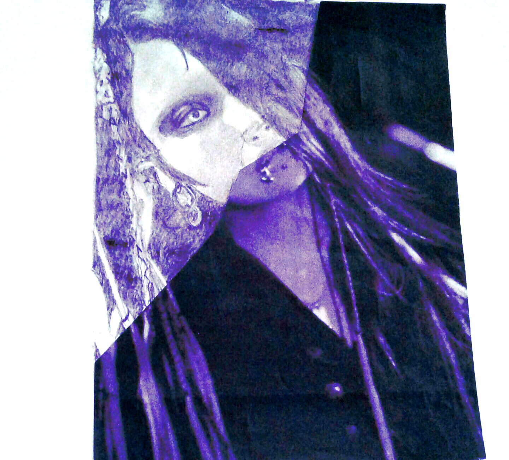
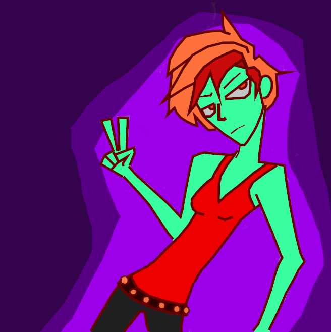

visual art
I've been drawing cartoons since 4th grade. I was obsessed with anime all through middle school, and that obsession influenced my art style.
In high school, I took two art classes and decided I hated them. I spent most of my time goofing off in my sketchbooks, bored to death of all the art history lessons and "required" projects. I just wanted to draw funky cartoons.
I certainly don't take drawing as seriously as I used to, which I honestly think makes it a whole lot better. It definitely makes it more fun.

